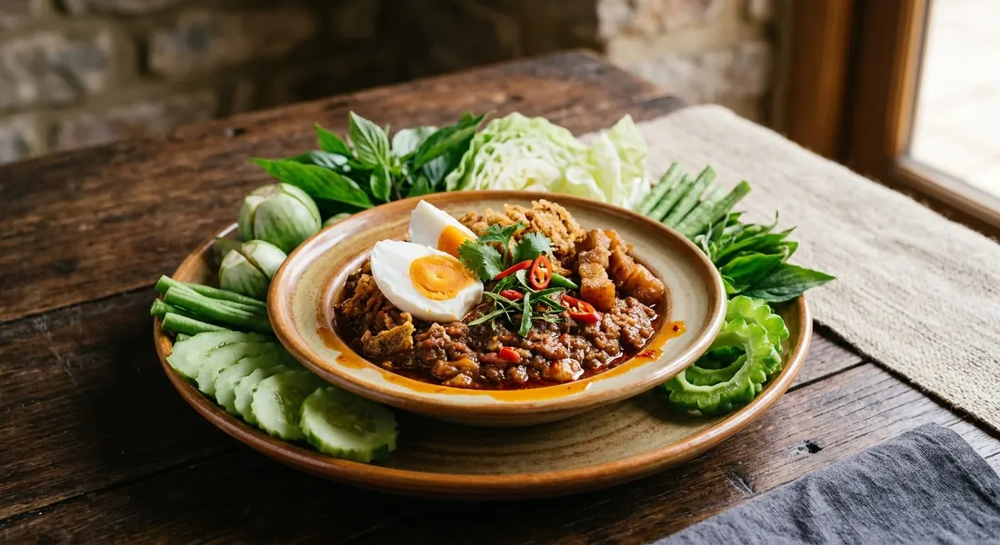

A shrimp paste nam phrik fried with sweet pork, buried under crispy catfish floss, salted egg yolk and pickled garlic — the palace-court dip improvised in a hurry on the way to a royal boat.

The name is literal: น้ำพริกลงเรือ — the nam phrik that got on the boat (ลงเรือ). The boat, though, was not a southern fishing boat: it was a royal barge at Suan Sunandha Palace in Bangkok, and the cook was เจ้าจอมหม่อมราชวงศ์สดับ (Chao Chom Sadaab), a consort of King Rama V. Called to join a boat outing before the meal was ready, she opened the food cupboard, grabbed what was there — a pounded shrimp paste nam phrik, sweet pork and crispy catfish floss — fried them together, and scattered salted egg yolk over the top. The improvisation became one of the most famous dishes in the palace repertoire, and Silpa-Mag has published her own recipe for it, as told in her lifetime.
What survives is a dish with a structure: a loose, sharp nam phrik kapi at the bottom, sweet pork worked through it, a snowdrift of crispy catfish floss on top, and the salted egg yolk — the dish's signature — studded over it with pickled garlic. Around it, the raw vegetables that every Thai nam phrik travels with. Her original instruction was firm on one point, and Silpa-Mag quotes it: the parts must go in one dish, never separate bowls — separate them, she said, and the dish loses its flavour, its beauty and its meaning.
The home-cook sources all keep the architecture but loosen the shopping list. Baanlaesuan's version, which traces the dish through family knowledge and old cookbooks, uses a samut songkhram shrimp paste and steams the catfish before flossing it. Maeban's magazine version scales everything up for a family table and, in a telling note, says to simply mix everything together — the fancy arrangement with carved vegetables is reserved for special occasions.
| Thai | English | Amount |
|---|---|---|
| กะปิเผา | Shrimp paste, grilled | 1 tbsp |
| กระเทียม | Garlic cloves | 15 |
| พริกขี้หนูสวน | Bird's eye chillies | 10–20 |
| มะดัน | Mak-dan, the sour garcinia fruit, sliced | 2 |
| มะอึก | Mak-uek berries, sliced | 2 |
| กุ้งแห้ง | Dried shrimp, pounded | 2–3 tbsp |
| น้ำมะนาว | Lime juice | 2 tbsp |
| น้ำตาลปี๊บ | Palm sugar | 2 tbsp |
| น้ำปลา | Fish sauce | 1½ tbsp |
| น้ำมันพืช | Vegetable oil | 2 tbsp |
| หมูหวาน | Sweet pork (moo wan) | ½ cup |
| ปลาดุกฟู | Crispy catfish floss (pla duk fu) | ½ cup |
| ไข่เค็ม | Salted egg, yolks only | 2 |
| กระเทียมดอง | Pickled garlic | 1 head |
| ผักสด | Fresh vegetables for dipping | as you like |
Sweet pork (Kapook): 200 g pork belly cut small, fried with 2 shallots, 2 tbsp palm sugar and 3 tbsp fish sauce until glossy. Catfish floss (Kapook): one grilled catfish, meat only, shredded with a fork and deep-fried until golden. The original pot (Silpa-Mag): the whole dish fried in pork fat, raw salted egg yolk pressed into pieces, and mak-dan or lime at the cook's discretion — with four pea aubergines and coriander arranged in the same dish.
The salted egg. The original recipe uses raw salted egg (ไข่เค็มดิบ), pressed into small pieces and arranged raw over the dish, where the heat of the paste softens it. Kapook's classic recipe calls for boiled salted egg (or a plain boiled egg), and Baanlaesuan halves the cooked yolk over the top. Every source keeps the yolk; only the state of the egg changes.
Mak-dan and mak-uek. The original and Maeban's recipe both work the sour mak-dan fruit and the mak-uek berry into the paste. Kapook's recipe lists them as optional — "if you don't have them, leave them out" — and Baanlaesuan's version omits them entirely, taking its sour from the lime alone.
Dried shrimp. Wongnai, Kapook and Maeban all pound dried shrimp into the paste or fry it in. The original palace recipe has none, and Baanlaesuan follows it — the shrimp flavour is the kapi's job alone.
Cooked or raw. The original, Wongnai, Kapook and Baanlaesuan all fry the pounded paste in fat before serving. Maeban's magazine recipe skips the frying altogether — pound, season, top with the pork, egg and floss, and serve. The fried version is deeper and keeps better; the raw one is sharper.
The sour. The original allows "mak-dan or lime, as you see fit". Maeban's formula is lime plus mak-dan; the others reach for lime. No two sources quite agree on how the sour arrives, only that it must arrive.
This recipe is translated from the following Thai-language sources. Where they disagree, we've said so.
1. Silpa-Mag (ศิลปวัฒนธรรม) — "น้ำพริกลงเรือสูตรต้นตำรับ เจ้าจอมสดับในรัชกาลที่ 5 เปิดเผยเอง!" (the original recipe as given by Chao Chom Sadaab, from ตำราอาหารชุดพิเศษสุดของนักข่าวหญิง, 2513) — silpa-mag.com
2. Wongnai — "แจกสูตรฟรี 'น้ำพริกลงเรือ' เมนูน้ำพริก รสเด็ด จนอยากชวนกันมาแจว!" by ปากน้ำเมี่ยน (the recipe used here, with the pork-pan fry) — wongnai.com
3. Kapook Cooking — "น้ำพริกลงเรือ อาหารไทยตำรับชาววังสุดอร่อย" (the classic home version and its moo wan and pla duk fu) — cooking.kapook.com
4. Kapook Cooking — "ข้าวน้ำพริกลงเรือ จานเดียวทำง่ายอร่อยได้ทุกมื้อ" (the one-plate rice version; mak-dan and mak-uek optional) — cooking.kapook.com
5. Maeban (แม่บ้าน) — "น้ำพริกลงเรือ" (the family-table formula, everything mixed together) — today.line.me
6. Baanlaesuan กินดีอยู่ดี — "น้ำพริกลงเรือ สูตรโบราณ" (the origin story and the samut songkhram kapi version) — kindeeyuudee.baanlaesuan.com